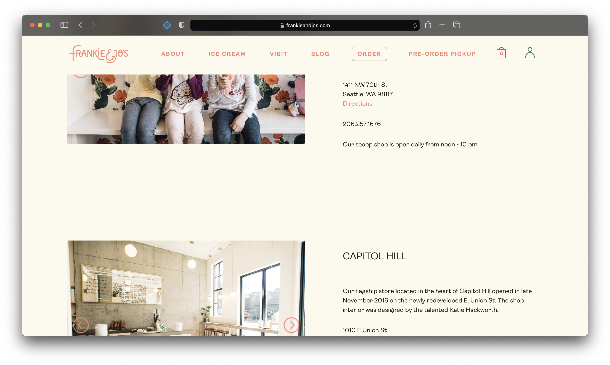
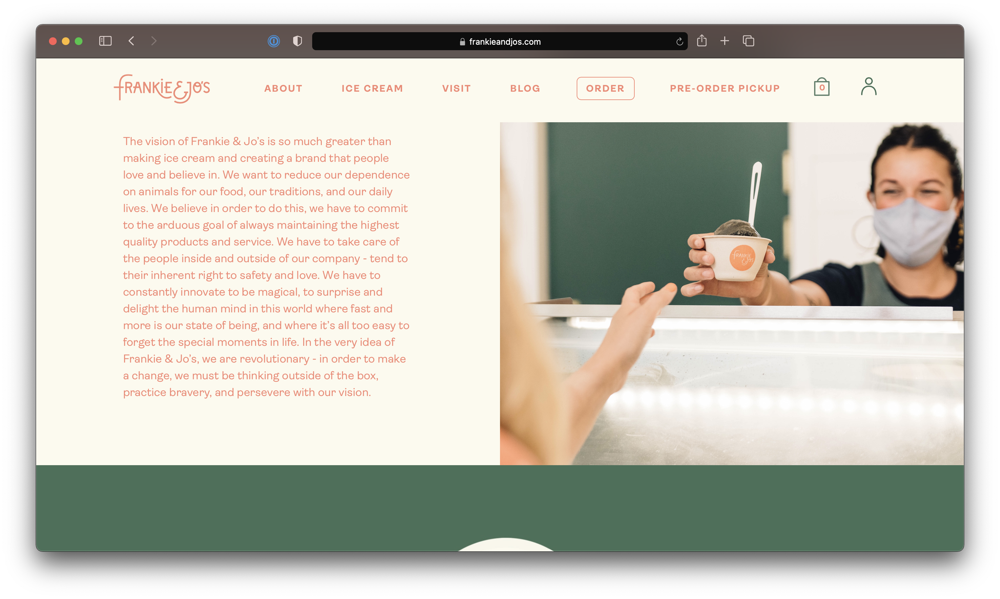
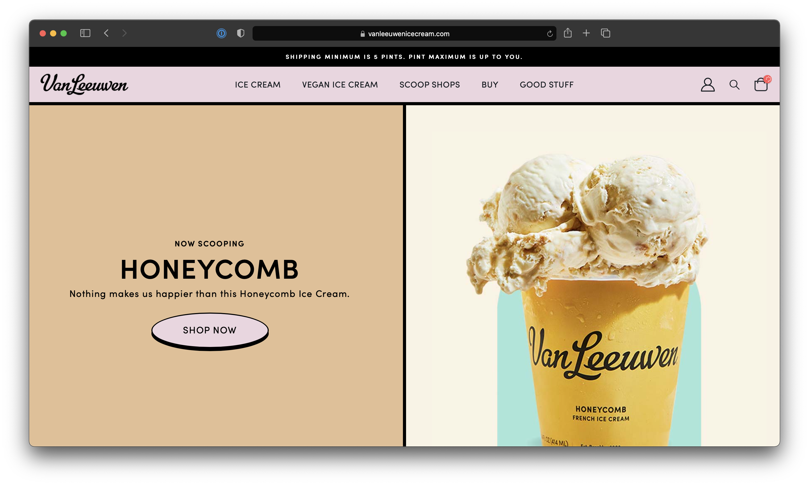
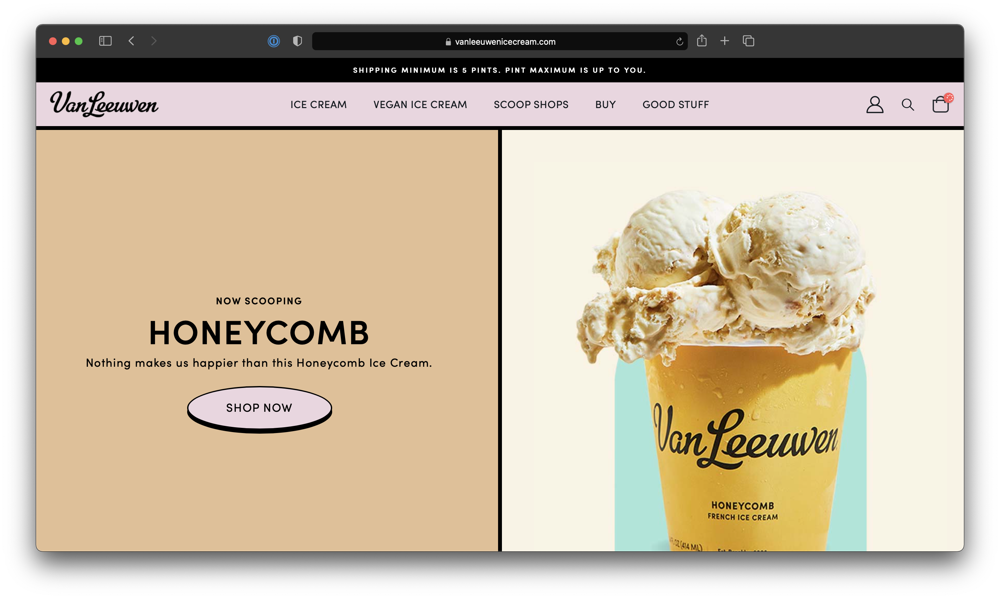

Final project proposal
Introduction
Scoops!
My ice cream shop, scoops! Is a small ice cream business with a brick and mortar store in downtown San Luis Obispo.
Target audience
The target audience of my site is people who like ice cream and want to learn about which flavors are stocked this week. Their primary task is to learn about the flavor offerings and where the store is located. Some users visit the site to learn more about the company and its mission. Although most just visit to find information vital to their ice cream eating experience.
Comparative analysis
Jeni's


Frankie and Jo's
 Van Leeuwen Ice Cream
 

Website content
Home
Our Ice Creams
Best Sellers
Featured Flavors
Visit Us Today
[Main image of ice cream, featured flavors, locations photos]
Flavors
Our current flavor offerings:
- Salted Caramel Crunch
- Lemon Bar
- Cookies in Cream
- Brambleberry Crisp
- Coldbrew with Coconut Cream
- Wildberry Lavender
- Milkiest Chocolate
- Green Mint Chip
[Image for each flavor]
Locations
We have locations in San Luis Obispo, Los Osos, Santa Barbara, and Carpinteria.
San Luis Obispo
Los Osos
Santa Barbara
Carpinteria
[Images of each shop location]
About Us
We started Scoops! in a yellow truck on the streets of SLO in 2018 with a mission to make good ice cream that makes you feel good.
Nowadays, people can spend so much time on what’s “healthy” they don’t stop to consider what’s healthy. As far as we’re concerned, happiness is healthiness.
What could be happier than that magic combination of milk, cream, eggs, and cane sugar (or coconuts, cashews and oats for our vegan friends)? Yes, our ice cream has fat. And that’s okay. It’s good-good, not good-bad.
Good is choice ingredients. Even if we have to go to Mount Etna to get them.
Good is simple ingredients. If it’s tough to pronounce, it’s probably tough to digest.
Good is harmonious ingredients. We seek to satisfy omnivores and vegans alike.
This is our way. The good way. The Scoops! way. Not just the best way to make ice cream, but to live.
[People scooping ice cream, Ice cream yellow truck]